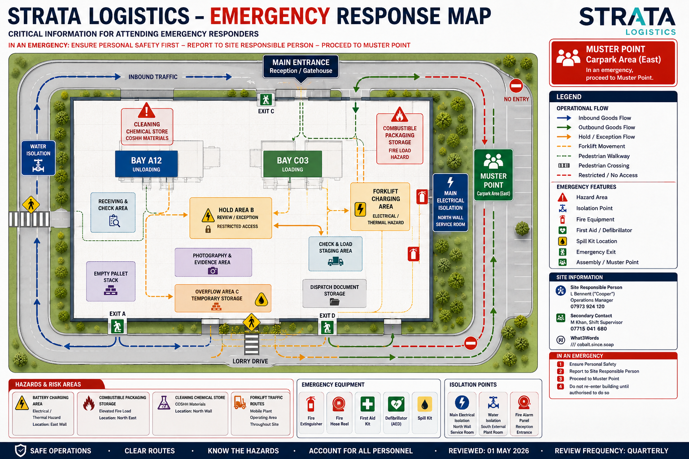

Primary Site Hazards
Battery Charging Area
Electrical / thermal hazard
Combustible Packaging Storage
Elevated fire load
Cleaning Chemical Store
Controlled COSHH materials
Forklift Traffic Routes
Mobile plant operating across warehouse floor
Emergency Controls
Site Safety & Evacuation Map
Refer to evacuation routes, hazard zones and muster arrangements below.

Main Electrical Isolation
North Wall Service Room
Fire Alarm Panel
Reception Entrance
Water Isolation
Plant Room External South
Occupancy & Accountability
Visitor / Driver Sign-In
Available via Gatehouse Register
Muster Verification
Led by Operations Manager
Restricted Areas
Identified on site map
Mobile Plant Status
Last known operational positions sourced from integrated operational workflow data and site reporting.
Confirm current status with muster lead and site responsible person.
Forklift 03
Last known position: Bay A12 — 09:41
Forklift 04
Last known position: Bay C Dispatch Support — 09:38
Operator Accountability
Confirm authorised operators are accounted for at muster point
Incident Control Contacts
Site Responsible Person
L Bennett (“Cooper”), Operations Manager
Secondary Contact
M Khan, Shift Supervisor
Document Control
Last Reviewed
01 May 2026
Review Frequency
Quarterly
Document Owner
L Bennett (“Cooper”)